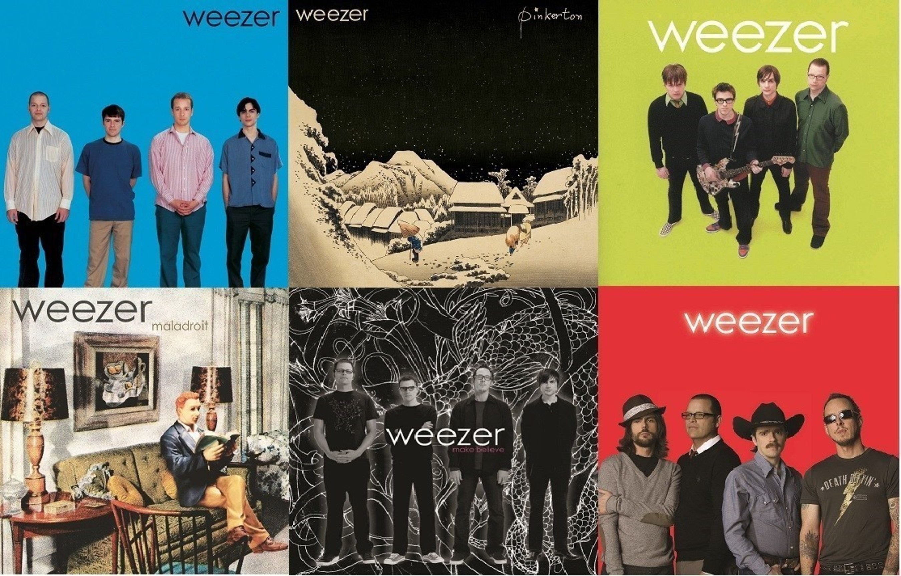

Weezer, the iconic American rock band formed in 1992, has carved out a distinctive place in music with their blend of alternative rock, power pop hooks, and witty, often introspective lyrics. Led by frontman Rivers Cuomo, their debut album, affectionately known as the Blue Album, became an instant classic with hits like "Buddy Holly" and "Undone - The Sweater Song," showcasing their knack for catchy melodies and Cuomo's quirky yet relatable storytelling. Over the years, Weezer has evolved stylistically while maintaining their signature sound, exploring themes of love, loneliness, and geek culture with albums like "Pinkerton," "Make Believe," and "Everything Will Be Alright in the End." Their music continues to resonate with a diverse fanbase drawn to their infectious energy, sincere vulnerability, and enduring charm.

Weezer's Other albums
